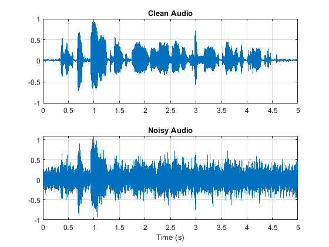
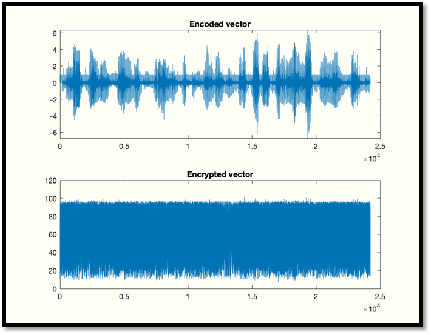
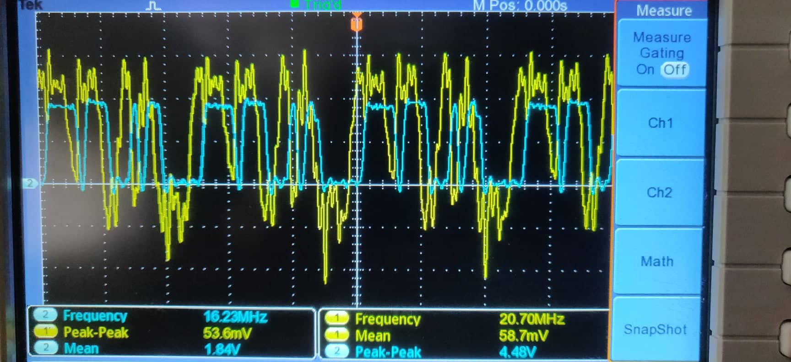
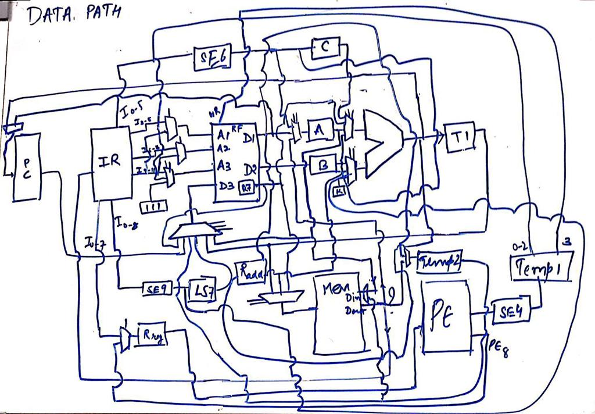

|
Adil Gupta
Hi, I am graduate in Electrical Engineering from IIT Bombay.
My Bachelor’s thesis is supervised by Prof. Preeti Rao. We are researching on speech enhancement algorithms to improve the automatic assessment of children's oral reading. I have recently completed an internship at Sony, Japan where I researched on deep learning based speech enhancement methods for real time applications.
Email /
CV /
Github /
LinkedIn
|
|
|
Research Projects
My major research interests lie in signal processing and communication systems with emphasis on speech and
acoustic signal processing, audio and music technology, natural language processing and application of deep
learning in these fields. I am also interested in Probability, Statistics, Machine learning and their applications in speech, image and video processing.
I have mentioned some of the recent projects below, please refer to my CV for a complete list.
|
|

|
Speech enhancement for improvement in Children's oral reading assessment
Digital Audio Processing Lab, IIT Bombay (July 2019 - current)
Professor Preeti Rao
Conventional speech enhancement methods usually modify the speech characteristics such as pitch, which is crucial for prosody assessment task.
We are currently researching methods of speech enhancement which preserves the speech characteristics and improves automatic oral reading assessment.
The enhanced recordings are to be automatically rated for reading fluency by using ASR and prosody detection.
|
|
|
Speech enhancement for real time applications
Sony, Tokyo, Japan (May 2019 - July 2019)
Kohei Asada-san, Kyosuke Matsumoto-san
Researched and developed deep learning based methods for real time speech enhancement in applications having requirement of very low latency. Also extended the idea to microphone arrays. Exact details have been kept confidential.
|
|
|
Confidence estimation of impacts
Balbix, San Jose, California (May 2018 - July 2018)
Dr. Pavan Ramkumar, Dr. Vinay Sridhara
Device breach impact is the amount information that would be compromised if a breach were to occur through any particular device in a network.
We Developed and implemented a probabilistic model to calculate the effective breach impact using fully Bayesian inference with a cutting edge deep learning framework and extended the method to calculate confidence level.
|
|

|
Low Resource Secure Voice Communication System
Prof. Vikram M. Gadre
Designed a speech compression and encryption algorithm for military applications. It was selected among the top 5 projects out of more than 35 participating teams in Texas instruments-Digital Signal Processing seminar.
|
|

|
High Speed Polymer Optical Fiber Link
Prof. Kumar Appaiah and Prof. Joseph John
Designed an end to end communication system using a 100m long polymer optical fiber capable of transmitting data at about 80Mbps and bit error rate less than 10-9.
|
|
|
Google Landmark Recognition Challenge
Prof. Preethi Jyothi
Participated in the google landmark recognition challenge on kaggle. The task was to identify the correct set of landmarks in a given image out of more than 15,000 possible labels.
|
|

|
Piplined RISC Architecture
Prof. Virendra Singh
Designed a 16 bit, 6 stage piplined RISC processer with 8 registors based on turing complete instruction set architecture and implemented it in VHDL. After optimization through data and control hazard mitigation and result forwarding, it was tested on Cyclone IV FPGA board.
|
|
{kind=link}